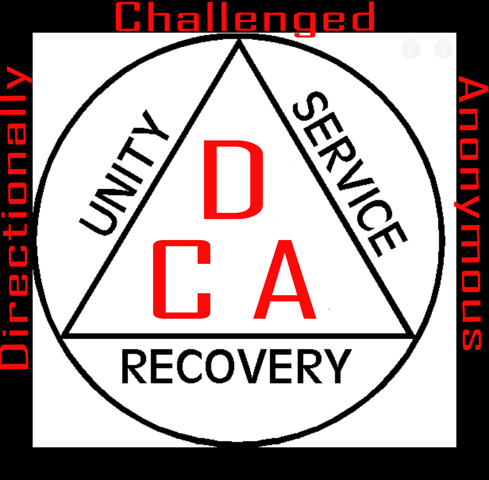
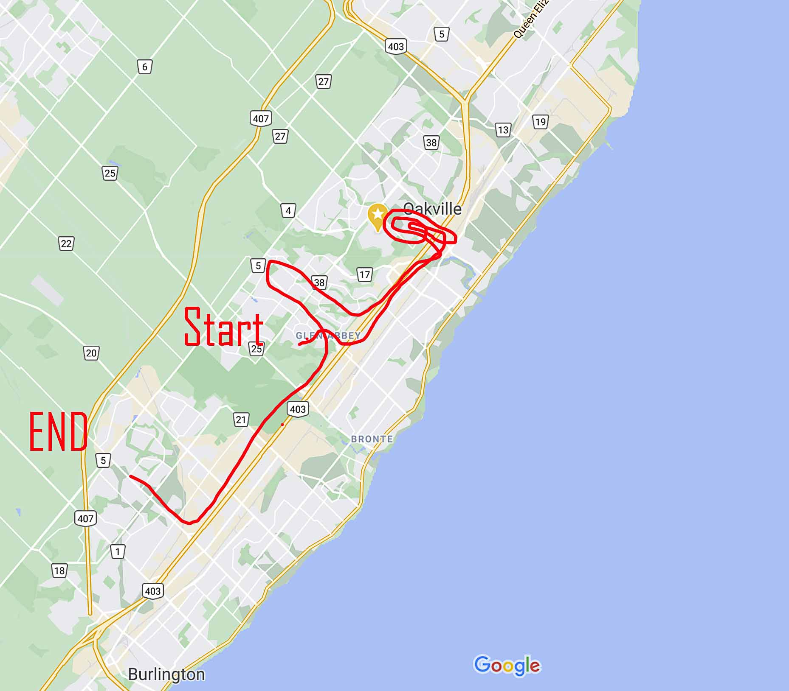

Hello my friends. Welcome to my site. Whether you are concerned about a loved one, concerned about a friend, concerned with yourself personally or just want to know more about this dreadful condition, I know your pain and you have come to the right place.
Only you can decide whether you want to give Directionally Challenged Anonymous (DCA) a try - whether you think it can help. Those of us who are in DCA came because we finally gave up trying to get from point A to point B without getting lost. We still hated to admit that we couldn't follow the simpliest of instructions or follow a GPS even remotely. Then we heard from other DCA members who were inflicted - that suffered the same feelings of guilt, loneliness and hopelessness that we did. We found out that we had these feelings because we had the disease condition. We decided to try and face up to what getting lost had done to us. Here are some of the questions we tried to answer honestly. If we answered YES to 4 or more questions below, we knew we were in deep trouble with our sense of direction. See how you do. Remember, there is no disgrace in facing up to the fact you can't find your way out of wet paper bag.

If you have answered yes to 4 or more of these questions then sorry, honey, you need my help. And being an expert in this area, and having suffered through this debilitating condition since birth when my twin sister tried to kill me by taking all my blood, I have written a book to help you cope. Get a copy for yourself now and stop feeling like an idiot